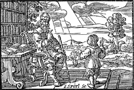
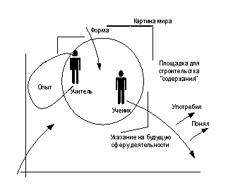
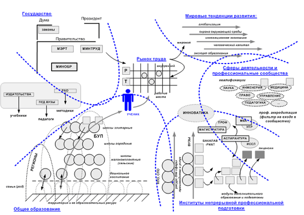
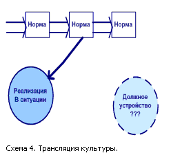
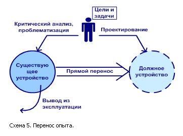

Мир ученичества
Ситуация в сфере образования: обучение и учение.
Дискуссии по проблемам реформирования образования в стране много лет сменяют одна другую. Участники дискуссий сходятся на том, что существующие возможности образования не удовлетворяет требованиям нового времени и всем сложностям жизни в современном обществе. Расхождения возникают по поводу существа несоответствий и планов по их искоренению.
В 60-е годы, в ходе «хрущевских» реформ, как основные рассматривались две проблемы: формулирование точного «социального заказа» системе образования от общества (?); и соответствующая смена содержания обучения. Подготовка в то время была преимущественно целевая, работал институт распределения выпускников вузов на известные рабочие места и понятие «молодой специалист», за которым стояли множество возможностей и льгот.
В начале ХХI века ситуация иная. Системы образования больше не существует. Как и монолитного советского общества. Соответственно, исчезла проблема «социального заказа». Сформирован рынок образовательных услуг, где множество хозяйствующих субъектов ведут активную маркетинговую политику в конкурентной борьбе за абитуриентов. Появилось множество новых игроков на «образовательном поле» и сложилась образовательная инфраструктура.
Свободный доступ через Интернет к любым информационным ресурсам, в том числе к методически организованному предметному знанию, породил не только дистантные формы обучения, но и существенно изменил формат «очного» образования. Рынок в лице тренинговых, консалтинговых и рекрутинговых компаний предлагает на выбор абитуриенту ассортимент учебных модулей под любой тип подготовки.
Проблема содержания, которое предлагает абитуриентам система обучения, уже не стоит. Есть проблема «подгонки» людей под рабочие места на рынке труда. И ее каждый должен решать самостоятельно. «Хороших» мест мало, а на «плохие» даже безработных не затянешь. Конкуренция формует «естественный отбор». Все больше абитуриентов начинают выстраивать индивидуальные образовательные траектории (точнее — проектории).
Большинство участников происходящих дискуссий не могут или предпочитают не различать конституирующие сферу образования процессы обучения и учения.
Обучение — деятельность, назначение которой состоит в том, чтобы выращивать, готовить, образовывать людей. Учение — действия людей, направленные на выращивание, подготовку, образование себя.
Мать обучает ребенка смотреть, слушать, ходить, брать в руку ложку, вовремя вспоминать о горшке. Ребенок пытается копировать близких людей — настойчиво хочет делать все так же как они. Поначалу не получается… И они пробуют еще и еще раз.
«Учить всех всему» — настаивал Я. А. Коменский в «Великой дидактике» (1658 г.) от имени процесса обучения. Идея для того времени, когда монополия на знания на фоне всеобщего невежества принадлежала небольшой группе ученых и учителей, революционная. И она реализована. Сегодня институты обучения в лице образовательных учреждений ведут между собой конкурентную борьбу за учеников и слушателей.
Прошло четыреста лет, и мы становимся свидетелями новой революции. Вся информация, накопленная человечеством, имеется в открытом и быстром доступе. Чтобы быть «конкурентоспособным в современном глобальном мире» — максима современного карьериста — нужно уметь от нее избавляться. Умение учиться становится все более значимым на фоне коммерческой активизации институтов обучения.
Где-то революция, а где-то понятийная катастрофа.
Неразличение обучения и учения не может быть случайностью или ошибкой. Это результат «понятийной катастрофы» (термин принадлежит С. В. Попову), которая поразила нашу страну в начале ХХ века. Простой пример. Берем в руки прекрасную книгу «Революция в обучении» (авторы Г. Драйден, Д. Восс, Издательство «ПАРВИНЭ», 2003) и смотрим название на языке оригинала — «The Learning Revolution (to change the way the world learns)». Learning по-английски означает процессы учения. Близкие слова для обозначения примерно того же: studies, apprenticeship, exercise. Обучение — принципиальной иной вид деятельности и слова другие: teaching, training, instruction, education.
Я пользуюсь понятием об учении (пишем раздельно!!!) российской методологической школы, в учениках которой имею честь состоять. Цитирую: «Когда деятельность ученика рефлексивно поглощает деятельность учителя, мы говорим о учении. Учитель при этом выступает не как обучающий, а лишь как демонстрирующий образцы деятельности или излагающий материал; он подобен при этом актеру, выступающему на сцене, и в этой своей функции легко может быть заменен техническими устройствами (например, кино или телевидением) и описательными текстами. Характеризуя деятельность ученика, мы говорим о понимании, анализе, умении копировать и воспроизводить, в целом — об умении учиться». (Г.П.Щедровицкий).
Вот об этом умении учиться и пойдет дальше речь. Ясное дело, без обучающих ученику не обойтись. Но в данной статье мы, по возможности, от обучения абстрагируемся. Этим процессом (обучения) распоряжаются Министерство образования, сеть образовательных учреждений: школ, вузов, детских садов и социальная группа «образованцев» — профессорско — преподавательский корпус. Здесь есть что реформировать, и обсуждается множество концепций, проектов, конструктивных предложений по поводу реформ.
Однако, разговоры о том, что главная задача школы — научить людей учиться, остаются разговорами на фоне ускоряющегося перевоплощения сети образовательных учреждений в торговую сеть по продаже услуг. Маскируется образовательный бизнес под деятельность обучения. Речь не идет о частных учебных заведениях. Именно школы и вузы, существующие на бюджетные средства, активно заняты предложением на рынке образовательных услуг. Точнее даже не услуг, а дипломов и аттестатов, продажи которых выросли за последние годы в несколько раз. А что они еще могут делать в условиях отсутствия программ и проектов развития в стране? Когда неизвестно, какие люди, с какой подготовкой, для решения каких задач понадобятся в ближайшем будущем.
Процесс учения не так заметен. Он как бы «размазан» по сообществам людей. И представлен в их точечных действиях по решению текущих задач собственного жизнеобеспечения. Люди действуют, ошибаются, анализируют ошибки и на ошибках учатся. Иногда они обращаются за помощью и тогда должны «подключаться» к сфере образования и развернутым там процессам обучения.
«Все мы учились понемногу чему-нибудь и как-нибудь».
(А.С.Пушкин).
Жизнь научит.
Для того чтобы чему — нибудь научиться и достойно прожить эту жизнь вовсе не обязательно отдавать себя в заложники системе образования. Лучший учитель это сама жизнь. Надейтесь на удачу и, возможно, вам свезет. Успешных людей, которые «университетов не кончали» — великое множество. Высокая оценка человека — «self made man».
Жизнь и есть подлинное и основное содержание образования, которое люди могут получить. Теоретически точно сформулировал эту мысль Карл Маркс: «…сущность человека не есть абстракт, присущий отдельному индивиду. В своей действительности она есть совокупность всех общественных отношений, в которые он включается по ходу своей жизни».
Те, кто не хочет «ждать милости от природы», встают на путь осмысленного учения. И должны действовать целевым образом. А для этого требуется понимание устройства сферы образования. Нужна «карта» мира учения, на которой собраны ориентиры и направления возможных движений и гид — поводырь. Сначала вместе с ним можно прорисовать на карте желаемый маршрут. А затем действовать, продвигаясь в обозначенном направлении.
Самоорганизация.
Учение в современном мире начинается в тот момент, когда человек решает (или должен по необходимости) перестать быть «опекаемым» и стать «вольным» (действующим по своей воле и несущим ответственность за свои действия).
Образованию, которое школа дает в режиме обучения, приходит конец, и должно начинаться самообразование, правда уже в другом режиме — учения в свободное от «основной работы» время. Переход от школьной подготовки к самообразованию совсем не прост и не лежит где-то в физическом пространстве-времени. Он означает смену форм мыслимости себя: тебе необходимо из «подопечного» стать «вольным»! И строго следовать определенным принципам самоорганизации.
Краткий путеводитель по миру ученичества.
Те, кто не хочет быть обманутым в поиске необходимых знаний, умений и навыков, должны взять на себя труд анализа ситуации и планирования собственной деятельности в рамках процесса учения. Учение будет эффективным только в том случае, если ставить перед собой совершенно особую цель: изменить и трансформировать организованности своего сознания и освоенные способы действия, двигаясь к поставленным целям и идеалам.Хочешь чему-нибудь научиться — займи позицию ученика. Ученик — по жизни самая эффективная позиция. Но непростая. Обозначим основные требования для действия и размышления в этой позиции (принципы самоорганизации). Затем, последовательно, обозначим поле деятельности (где может двигаться ученик) и, наконец, перечислим виды работ, которые он должен выполнить, технологии и испытания, через которые он может пройти.
«Ученик» по версии Я. А. Коменского («Orbis sensualium picti»)
Учитель. Подойди, мальчик! Научись уму-разуму.
Мальчик. Что это значит — уму-разуму?
У. Все, что необходимо, правильно понимать, правильно делать, правильно высказывать.
М. Кто меня этому научит?
У. Я с божьей помощью.
М. Каким образом?
У. Я поведу тебя повсюду: покажу тебе все, назову тебе все.
М. Вот я! Веди меня.
Принципы самоорганизации ученика в современном мире.
Практика обучения построена на нескольких простых принципах: смотри, как я делаю, слушай мои пояснения, попробуй сделать сам.
Практика учения также может быть представлена как реализация нескольких принципов: действуй, анализируй свои неудачные действия, выясни как это возможно сделать, спроектируй свое новое действие.
Учиться можно как в рамках института образования (со страховкой опытных) так и вне его. Тогда учение будет называться самообразование. Путь (метод) самообразования всегда уникален и теоретическому моделированию не подлежит.
В отличие от перечней образовательных учреждений (ОУ), которые собраны в «Справочниках для поступающих в вузы» или, более популярных сегодня, «Справочниках карьериста», наш «краткий путеводитель» должен оснастить читателя пониманием существа процесса учения. И помочь сознательно выстроить траекторию собственного «образовательного странствия» (С. И.Гессен).
Основное отличие мира учения от мира обучения состоит в том, что он не задан в известной форме и достаточной полноте, по примеру, в виде списка учебных заведений, предлагающих себя абитуриенту; классификатора специальностей или перечня учебных программ — модулей. Мир учения это всегда неизведанная территория, устройство и правила жизни на которой понимаешь, только проделав по ней определенный путь. В качестве ориентиров в мире учения нужно использовать примерно с десяток простых принципов.
Найди компанию.
Сколько ни рассуждай о «равных стартовых возможностях», а все люди от рождения уже принадлежат к какой-либо социальной группе, имущественной страте, городской или деревенской цивилизации, живут в пригородном закрытом поселке или на окраине большого города. И есть две группы стимулов для получения образования: первая — сохранить принадлежность к группе (страте) — не опуститься ниже по шкале социальной успешности. Вторая — подняться по этой же шкале вверх.
С кем поведешься от того и наберешься. Попадешь в тюрьму — получишь шанс выйти оттуда профессиональным преступником; попадешь в Оксфорд — получишь шанс принадлежать к правящей элите. Среда или «туса», как принято говорить сейчас, сформует тебя. Хочешь быть социально грамотным и материально успешным — ищи соответствующую компашку грамотных и социально успешных.
Ситуации «обучения — учения» можно организовать и под баобабом. Но лучше делать это в образовательном учреждении (ОУ). В специально оборудованном помещении с доской и кусочком мела это получается комфортнее.
Сеть образовательных учреждений (ОУ) — материальная скорлупка инфраструктуры образования. ОУ — всего лишь видимая часть «образовательного айсберга». Никакие манипуляции с формами собственности, условиями финансирования, тотальным тестированием, бакалавреатом и магистратурой на содержание образования не влияют. Люди обучают и учатся не в ОУ!!! Но под руководством и наблюдением мастера — учителя (если повезет) или самостоятельно (если хватает воли себя заставить). Мастера, которые умеют обучать и любят свое дело, будут его делать в любых условиях. Например, в роще Академия, где-то в Греции. А шарлатан и в мраморной аудитории с золотой доской будет бесцеремонно воровать время у наивных слушателей.
ОУ — это место, где может сложиться воспитательная среда. Такой вот специфический фрагмент жизни — живое общение и целевая коммуникация, где люди могут выработать жизненную позицию, сформировать интересы и устремления. А вот если среды нет, а так оно чаще всего и бывает, то это говорит только об одном — никакого учебно-воспитательного процесса в данном ОУ организованно быть не может.
Сейчас любят приводить в качестве примера хорошей фундаментальной подготовки, то, что изучали, ставшие успешными в последующей жизни, выпускники МФТИ, МГУ, МИФИ. Более правдоподобной нам представляется «средовая» версия. Известно, через какое сито испытаний и отборов пришлось проходить тем, кто хотел попасть в «физики» — одну из самых престижных в советские времена профессий. Могли бы ребята прогнозировать — наверное, шли бы в «нефтяники». Тем не менее, конкурентная среда в физико-математических школах, соперничество за попадание на лучшие места для практики, постоянное напряжение интеллектуальной борьбы ковали характер. Именно поэтому выпускники Физтеха, не отягощенные гуманитарными предрассудками, и готовые к борьбе, захватывали лидирующие позиции в ходе рыночных реформ.
Найди школу.
Ты можешь попасть в элитарную школу (их единицы, они хорошо известны), а можешь в иллюзорную (их большинство, здесь преподаватели делают вид, что учат, а ты будешь делать вид, что учишься). Редкий случай — но он и составляет суть образовательного дела — когда на базе ОУ сложилась и работает школа. Школа, в подлинном смысле этого слова, предполагает наличие особой метафизики — корпуса идей, принципов, понятий, техник и схем, — которую она и транслирует. И носителей метафизики: мастера — учителя — подмастерья — тьюторы. А также заинтересованные ученики. Совместными усилиями они создают вполне определенное содержание. В этих же совместных работах идет и воспитательный процесс — вырабатывается жизненная позиция, отношение к коллегам и к себе, отношение к общему делу. По формам организации школа — это коллективные интеллектуальные и организационно-деятельностные игры.
И еще один, важнейший атрибут и признак подлинной школы. Она должна иметь развивающую надстройку в виде «проектно-аналитического центра». Если школа только транслирует метафизику, то неминуемо и скоропостижно умрет (вместе с создателями). Либо превратится в веру и религию (небольшое количество случаев известно). Проектно-аналитический центр это место, где мастера перестают быть пределом для учеников и выталкивают их в поисковые разработки. Подобная работа позволяет приводить метафизику школы в соответствие духу времени и дает горизонты молодым.
Найди учителя.
Очень важно занять интересное тебе место в социуме и попасть в школу. Но кроме этого нужно еще уметь «заработать кусок хлеба». А для того чтобы научиться делать что-то полезное и получить специальность, нужен образец — мастер. У него ты можешь перенять способ деятельности и научиться мыслить.
В работе с мастером-учителем может возникнуть то, что называют содержание подготовки и образования. Не следует путать содержание с содержимым. Содержимое учебно-воспитательного процесса составляет накопленная человечеством мудрость, которая попала в учебники, учебные программы и планы и пересказывается учительским и профессорско-преподавательским корпусом ученикам и студентам.
Всего сто лет тому назад содержание подготовки и образования могло быть отождествлено с культурой (В.И. Ленин говорил комсомольцам: «Коммунистом можно стать только тогда, когда овладеешь всей культурой, которую накопило человечество»).
В современном мире изменилось назначение культуры, и резко выросла «социальная мобильность» человека. Ценностью теперь является не досуг как таковой, а рабочее место, которое дает возможность выбирать досуг. Мы уже перестали удивляться «новым волнам» в производстве, которые следуют одна за другой: они вызывают массовые переливы специалистов из одной сферы деятельности в другую и требуют частой смены специальностей. И каждый раз человек встает перед необходимостью переучиваться. Для этого нередко нет ни времени, ни сил. Значит, люди заранее должны быть максимально подготовлены к возможным сменам рабочих мест и специализации; они должны иметь такое общее образование, которое бы обеспечило им необходимую основу для широкой группы работ и свело бы процесс переучивания к минимуму.
При узкопрофессиональном обучении, подготовка специалиста средней квалификации заканчивается лишь к 20-21 году, подготовка специалиста высшей квалификации — к 24-28 годам. При этом уровень подготовки остается крайне низким и очень часто недостаточным для современного производства. Попытки сделать обучение более широким и общим идут по пути механического объединения и, следовательно, увеличения объема разнообразных знаний, которые преподносятся людям, проходящим переподготовку.
Выход — учиться осваивать необходимые способы, оперативно и самостоятельно выстраивать содержание проектируемой деятельности. Научиться строить содержание можно, работая с мастером — учителем. Происходит это в мастерской, в ходе изготовления изделия (Схема 2). Поясним подробнее.
Учителем можно назвать того, кто, пользуясь собственным опытом, конструирует сам или привлекает некую организационную форму -: тренировка, упражнение, задача, игра, испытание — для того чтобы «вычерпать» свой опыт. Например, оформить как задачу определенный способ мышления или технику. А дальше должен сработать ученик. Он решает задачу, «пробуя способ». Затем ему необходимо проанализировать проделанные работы вместе с мастером. И если ученик поймет, где и как этим способом можно воспользоваться, то случится акт «содержания».
Искусство учителя состоит в том, сконструировать задачу. Она должна быть принята к решению, и выводить ученика к пониманию способа, который можно «вычерпать». Каждый акт «получения содержания», это акт созидания. Он может изменить всю систему представлений, как ученика, так и учителя. И поэтому мало кто торопится создавать новое содержание, а если и делает это, то со многими оговорками и не торопясь.
Ясно, что «выход к содержанию» самое важное, самое редкое и самое сложное дело в сфере образования. Гораздо проще кормиться фаст-фудом — готовыми системами знания, упакованными в учебники, чем заниматься содержанием.

Учись строить знания.
Учителя, способные поставить задачу и проделать работы по выходу к содержанию, всегда были в дефиците. Поэтому ты должен научиться строить способы действия и применять необходимые для этого инструменты самостоятельно.
Различай стили мышления: созерцательно-познавательный и проектно-аналитический.
Широко распространен миф о возможности выбора в сфере образования — профессий, учебных курсов, знаний, умений и навыков… Миф этот подкрепляет модель супермаркета. Ты якобы бродишь вдоль полок и выбираешь из гигантского многообразия то, что нравится и доступно по бюджету. На самом деле ты вынужден взять то, что тебе подсовывают. Когда обучающих мало, а обучаемых много, требуется их разумная организация и планирование совместных работ во времени. Для этого придуманы классно-урочная система, учебные предметы и системы «школярских» знаний, коллективное прослушивание лекций, групповые тренировки, масштабные игровые учения, экзамены и тесты. Напомним здесь высказывание Гете: «Выпускник школы подобен пушке, которую многие годы заряжают, чтобы она выстрелила один раз — на экзамене, и в ней ничего не осталось».
То, что нужно именно тебе, не возьмешь на полке — новое знание требует проектной разработки, а затем анализа и поиска ресурсов, без которых проект не реализовать.
Следуй дисциплинарной норме.
Ты ничего не сможешь сделать, если не будешь заставлять себя следовать жестким дисциплинарным нормам. Режим, рабочий график, правильная организация взаимодействий в команде и на поле деятельности — элементарные условия для эффективного учения.
Приступая к учению, ты должен принять к исполнению нормы, которые стоят за понятиями: режим, работа, тренировка, ответственность, продуктивность. Строевая подготовка в армии и спортивная тренировка являются эталоном для постановки дисциплины.
Дисциплина ума ничем принципиально не отличается от строевой и спортивной дисциплины. Это корпус норм и требований, которые люди добровольно применяют по отношению к самим себе, чтобы освоить и исполнять определенный способ мысли и действия. Он осваивается в результате прохождения специальной подготовки и может опознаваться как сумма атрибутивных характеристик образованного
человека.Кстати, там, где готовят к ответственному действию (с риском для здоровья и жизни): в разведке, в спорте, в управлении собственностью, — подготовка регулируется только при помощи «устрашающих наказаний». Сначала «новобранцы» свободно выбирают, чем будут заниматься. Но, попав в систему подготовки, должны полюбить палочную дисциплину.
Дисциплину нужно принять к исполнению. А это невозможно сделать в лекционно-урочном режиме. Необходим тренер, который покажет действие — схему и даст упражнения для ее закрепления. А также тьютор, который поможет закрепить данную схему в понятии, и указать ее место и назначение в твоем инструментальном ящике — несессере.
Тренируй готовность.
Чтобы выполнять принятые на себя дисциплинарные нормы, необходим высокий уровень психофизической готовности. Это означает ежедневные тренировки для поддержания хорошей физической формы. И постоянное создание боевых (конфликтных) ситуаций для тренировки стрессоустойчивости.
Ставь далекие цели.
Энергию для действия дают не калории от съеденной пищи, но далекие горизонты и цели организации работ по их достижению. Те, кто не имеет целей, всегда будут материалом для манипулирования другими людьми.Школа спорта — неплохой тренажер целеполагания. В подготовке элиты занятия спортом занимают 50 и более процентов учебного времени. Здесь выращиваются жажда конкуренции, стремление к борьбе за лидерство, командный дух, планомерная подготовка себя к изматывающим соревнованиям.
Учи других тому, чему хочешь научиться сам.
Быстрее и эффективнее всех учится тот, чьи цели для их достижения требуют организации больших групп людей. Этих людей нужно не просто организовать, но и «зажечь», передав им собственные целевые ориентиры. Проделывая эту сложнейшую работу, ты сам впервые поймешь, куда и зачем целеустремлен.Кроме того, профессионалами становятся те, кто может показать и объяснить способ своего действия другим. Он не только может сделать, но еще и владеет нормами своего дела.
Преврати принципы в техники.
Принципы подобны звездному небу. Днем, когда светло и видно, куда можно двигаться, они тебе ни к чему. Но в ночном лесу они понадобятся, чтобы двигаться в нужном направлении и выйти в нужное место. (Образ заимствован у Платона и предполагает знание астрономии. В современном мире в лесу можно сориентироваться и при помощи GPS)
Действуй — анализируй ошибки — сверяйся с принципами — действуй снова и снова. Так, постепенно, принцип может превратиться в технику (искусственно приобретенную способность).
Еще несколько общих принципов:
— Цель и задача самоообразования — оснаститься инструментами интенсивного накопления опыта в любых жизненных ситуациях;
— Общее образование — тренажерный зал для вхождения в коллективные (групповые, бригадные, командные) работы;
— Системы подготовки созданы и существуют для того, чтобы готовить людей к самостоятельной жизни, в автономном режиме;
— Чтобы употребить их в своих интересах ты должен получить общие понятия об их устройстве и научиться ставить рабочие цели по отношению к каждой из них;
— Практическая подготовка состоит в том, чтобы освоить техники аналитики и проектирования (способность видеть и схематизировать деятельность, в которую ты включен);
— Профессиональная подготовка может быть получена только «на рабочих местах» и в рамках профессионального сообщества.
Если не сможешь действовать согласно этим принципам — см. выше: жизнь научит.
Самоопределение.
Осмотрись и действуй.
Разобравшись немного с принципами самоорганизации — как вести себя, занимая позицию «ученика», обратимся теперь изображению того «поля деятельности», куда ты можешь попасть. Исторически сложились и сегодня функционируют параллельно и одновременно три типа форм организации, которые обеспечивают процессы обучения и учения. Это — Система, Инфраструктура и Рынок.
Три ипостаси сферы образования.
Организационно-техническая система.
Сфера образования — важнейший инструмент государственной политики.
В СССР образование было устроено как организационно-техническая система. На вершине управленческой иерархии находились Министерства образования (общего, среднего специального и высшего). Работала «управленческая вертикаль» — административная пирамида: Облоно, Гороно, Районо, Академия педагогических наук и сеть педагогических вузов. А в основании пирамиды лежали школы, ПТУ, техникумы, вузы. Из Министерства спускались директивы, из Академии педнаук — учебники, из пединститутов — учителя. Из Минфина — деньги. И вся конструкция длительное время надежно работала. Пока работала система управления — имело место то, что можно назвать «качество образования». Качество изделия есть функция от нормальной работы устройства, его изготовляющего.
Для большинства опытных (по возрасту) работников сферы образования проблема состоит в том, чтобы старую систему (управленческую вертикаль) восстановить. Тогда, считают они, все будет нормально: нормальные учебники, нормальная зарплата, высокий уровень знаний. И ученики будут учиться с удовольствием.
Министерство образования все еще пытается представить останки своей отрасли как чувственно-единый объект (систему?) и намеревается «ухватить» его при посредстве ЕГЭ, ГИФО и подобных инструментов. Получается плохо, поскольку подобная система может работать и нужна для реализации программ целевой массовой подготовки. В Советском Союзе их было немало, и они были отлично отработаны. Интенсивно, в короткие сроки, готовились армии летчиков, авиаинженеров, физиков — ядерщиков, ракетчиков, химиков, энергетиков, электронщиков, программистов, а также специалистов по научному коммунизму.
Целевой подход к подготовке обязателен для Государственной службы, где чиновникам необходимо постоянно проходить испытания и подтверждать свою квалификацию.
Сегодня у России нет Больших общегосударственных программ и проектов, поэтому и системная организация в сфере образования не востребована. Так что в систему целевой подготовки ты вряд ли попадешь.
Рынок образовательных услуг.
За последние десять лет, на фоне целенаправленного разрушения организационно-технической системы, в России сформировался рынок образовательных услуг. Произошло это, частично, за счет деятельности негосударственных учебных заведений, но, в основном в результате усилий инициативных и предприимчивых директоров, ректоров, преподавателей государственных вузов, которых государство бросило на произвол судьбы (или в объятия рынка). Старая система распалась на множество «хозяйствующих субъектов», каждый из которых действует на свой страх и риск, формует свою «рыночную нишу» и соответствующую клиентуру. Сфера образования уже стала питательной средой для малого и среднего бизнеса, а в перспективе здесь появится большой бизнес, крупные игроки. Что в США и Европе уже случилось.
В стране создаются корпоративные университеты и системы подготовки. Множество отечественных и импортных тренинговых и консалтинговых фирм предлагают на рынке свои программы — модули переподготовки и повышения квалификации.
Что означает для тебя «работа с рынком»? Прежде всего, то, что ты можешь купить любую необходимую тебе лицензию или аттестат о профессиональной квалификации.
Формой фиксации образовательной траектории человека на рынке образовательных услуг является резюме, где отмечены все приобретенные им дипломы, лицензии, сертификаты и накопленный опыт практической деятельности. Резюме есть свидетельство о рыночной стоимости и знак капитализации специалиста.
Еще одна категория для понимания и аналитики сферы образования — инфраструктура. Это такой принцип устройства, при котором мы можем этим устройством пользоваться, но как оно устроено, не знаем — организационная структура и система управления (если она есть) от нас скрыта (невидима) — мы не можем ею управлять.
Для внешнего наблюдателя инфраструктура выступает в виде сети мест, терминалов, правил. И назначение ее состоит в том, чтобы клиенты могли подключаться к терминалам, пользоваться местами, следовать правилам и получать необходимые услуги. Инфраструктуры складываются на протяжении длинных отрезков времени, в результате действия многих систем управления, поэтому такой объект изначально «множественный», гетерогенный (простейшие примеры — банкомат, Интернет). Грамотное пользование услугами инфраструктуры требует специальной юзерской подготовки.
Карта образовательной инфраструктуры.
На схеме 3 представлен результат простой инвентаризации единиц, которые могут быть отнесены к инфраструктуре образования.
Это материальная инфраструктура (множество образовательных учреждений, устроенных по разным принципам и правилам, через которую все мы проходим: школы, вузы, экзамены, дипломы, аттестаты и т.д.);
Это образовательные программы, выстроенные на разных онтологических основаниях, которые разворачиваются на разных фрагментах инфраструктуры;
Это возможные траектории «образовательного странствия», по которым попадают в «мир учения» и движутся через тренировки и испытания те, кто занял позицию «ученика».
Это структура связей, соединяющая между собой:
— места приложения труда;
— культуру специальной и профессиональной работы;
— индивидуальные жизненные траектории людей.
Но это и игровое поле, на котором одновременно действуют четыре группы игроков, каждая из которых устанавливает свою группу правил.
Во-первых, это Государство. Ему нужно чтобы подготовка (общее образование, которое обеспечивает БУП — базовый учебный план) у всех граждан была единообразная. Это обеспечивает целостность и само существование Государства. Ему нужно, чтобы все граждане были готовы к армейской службе. Чтобы все они были патриотами. Именно для достижения этих целей Государство создало сеть образовательных учреждений.
Родители задают другую группу правил. Ученики и студенты — их неликвидная собственность. Родители инвестируют средства в образование своих детей и тем самым в собственное будущее.
Третью группу правил задают мировые тенденции развития. В школе вам предлагают изучать физику, химию и биологию. Но вы уже знаете, что в современном мире успех принадлежит торговцам, менеджерам, финансистам, программистам и юристам.
Четвертую группу правил задают через рынок труда сферы деятельности. Каждая сфера через свои профессиональные сообщества стремится привлечь рекрутов.
Это игроки, которые не хотят играть по «чужим» правилам, каждый старается вести «свою игру» и соответствующим образом изменять «под себя» игровое поле и правила. Всем ходом событий «на поле» они вынуждены менять свои стратегии и сценарии действия в зависимости от действий других игроков. Волей-неволей придется искать способы установления общих правил игры для всех.
Инфраструктура образования находится в отношении подобия и в кооперативных связях с общественной практикой, поскольку должна поставлять кадры на рабочие места. Эта задача трудно выполнима в силу ее невероятного консерватизма (она ведь завязана на культуру и ее трансляцию через самых мудрых — носителей культуры) и аллергии к быстрым переменам (ситуативным, конъюнктурным) в системах деятельности.
Еще хуже обстоят дела с решением другой группы задач — создавать новые организованности деятельности (и, соответственно, новые рабочие места). Их ставят новые поколения подготовленных людей, которым нужно самоутвердиться, найти «место под солнцем» и заявить миру о себе.
В силу этих обстоятельств нормальное состояние инфраструктуры образования можно назвать «перманентное игровое реформирование». Здесь выращиваются и «изготавливаются» люди для будущего. Здесь разумно и нравственно устраивать эксперименты над людьми — в лабораторных условиях, под надежной защитой принципа «я пока не волшебник, я еще только учусь». Что реально и происходит. Пройдя в ходе подготовки в тепличных условиях образовательного учреждения через десятки имитаций реальных жизненных ситуаций, вы можете приобрести навыки осмысленного действия, как на местах в производстве, так и в типичной экономической среде.

Самодеятельность.
Твои действия по употреблению возможностей образовательной инфраструктуры не подлежат описанию в понятиях «индивидуальной траектории». Траектория — линия, вдоль которой движутся в заданной системе отсчета. Траектория может быть рассчитана, для того чтобы выполнять функцию прогнозирования будущего. С учением все не так. Если ты чему-то учишься, сознательно меняя содержание сознания и способы действия, то на каждом следующем шаге тебе придется заново проектировать и планировать свою деятельность и ставить новые цели. Суть дела точнее выражает такой неологизм как «проектория». С дополнением от С.И.Гессена, цитированного выше, который назвал движение человека в сфере образования «образовательным странствием».
Чтобы выстроить проекторию своего образовательного странствия, необходимо: самоорганизоваться в позиции «ученик», самоопределиться по отношению к образовательной инфраструктуре и самостоятельно брать и накапливать навыки, умения, знания, способы и понятия, употребляя имеющиеся тренажеры, мастерские (мастеров), системы знаний, ситуации деятельности.
Пример из собственного опыта. Вспоминаю задушевный разговор с Учителем после окончания длинной изматывающей работы. Сидим, анализируем, что сделали не так, как следовало бы. Критикуем друг друга. И вот он говорит: «Ладно, скажите, что я вам еще должен дать?». Тут один из учеников, самый смелый, спокойно отвечает: «А ничего от вас не требуется, Георгий Петрович. Все, что нам нужно, мы и так у вас возьмем!» Конечно, Учителю было противно слышать подобные речи. Он пару месяцев повозмущался, а затем перевел эту ситуацию в принцип.
Нет ученичества без само — деятельности.
Четыре полосы препятствий: работы, технологии, испытания.
Наиболее эффективная форма трансляции деятельности новым поколениям это индивидуальная педагогика. Ее принцип: «Сделано вручную». Один ученик (небольшая группа учеников) — один учитель. Пример: Аристотель и Александр. Эта форма уникальная, нетехнологичная и дорогая. Чтобы получить в свое распоряжение подлинного учителя, тебе нужно родиться в царской семье или получить улыбку Фортуны. А если пока не повезло, то придется воспользоваться ресурсами и возможностями одной из педагогических технологий.
Педагогическая технология —техническое устройство (комплекс устройств), при помощи которого одни люди осуществляют преобразования в других людях. Существо педагогической технологии определяются тем, как она создает и транслирует содержание.
Для выращивания разных способностей людей исторически сложилось несколько групп технологий:
— Тренировка и натаска, в ходе которых приобретаются навыки грамотности: телесной, коммуникативной, технологической. Назначение — просвещение народа (граждан) в целях сохранения общественного целого. Осваивается по принципу «повторение — мать учения».
— Мастерские специальной (и профессиональной) подготовки к деланию. Назначение — воспроизводство основных сфер и типов деятельности. Принцип «научиться чему-либо можно, только делая это».
— Питомники по отбору и взращиванию элиты. Назначение — подготовка управленческой аристократии, т.е. людей с «государственной», а не своекорыстной позицией. Принцип «высшее предназначение».
— Имитационные игры на макетах будущей деятельности и анализ случаев принятия точных решений для разработки и накопления эффективных способов и инструментов.
— Сортировка, отбраковка и вербовка тех , кто сможет пополнить «группы прорыва»: проектировщики, инженеры, исследователи, предприниматели, люди искусства. Принцип «победители получают все». Каждая группа технологий предполагает особые формы организации работ и содержание трансляции.
Тренажеры грамотности (сформируй навыки).
Грамотность — уменье читать, писать и считать — первая ступень народного образования — позволяет вам быть членом общества и пользоваться техническими устройствами (компьютеры и прочие машины) без помощи других людей. Грамотность предполагает освоение знаковых систем, то есть способность работать не только руками и телом, но включаться в сложную кооперативную деятельность с другими людьми. Главное здесь — такое владение семиотикой или языком, которое позволяет войти в группу и действовать с ней сообща.
И достаточный уровень телесной (психофизической) готовности. Сегодня для ее обозначения любят употреблять понятие «стрессоустойчивость».
Грамотность определяет начальный уровень подготовки «на входе» в деятельность. Ставится при помощи строгого тренера в ходе длительных упражнений через тренировку и натаску. «Царского пути» здесь нет. Нет лучшего способа «заинтересовать» человека, в тренировке грамотности, чем описанный в одном древнеегипетском папирусе: «Баюкай сына своего хорошею дубиной — уши мальчика на спине его».
Мастерские специализации (приобретай умения).
Жизнь прекрасна сама по себе. Но для того чтобы ею наслаждаться, иногда приходится входить на рабочие места в системах деятельности. И там выполнять специальные работы. Чаще всего ради зарплаты, а иногда — если удастся найти «призвание» — получая удовольствие. Чтобы стать специалистом в каком либо деле, нужно пройти подготовку в соответствующей мастерской.
Что такое «мастерская»? Это комплекс работ, который строится вокруг мастера. А Мастер, это тот, кто умеет сделать. Он ставит группе учеников задачу, решить которую они заведомо не могут. И он это понимает. Но у него самого есть средства для решения задачи, соответствующие инструменты и понятия. И если ученики начинают задачу решать, делая ошибки, то он может кое-что пояснить и подсказать.
В мастерской ученики осваивают инструменты разных специальных работ: как отремонтировать автомобиль, как написать сценарий, как сконструировать теорию. Освоение может произойти, если рядом есть мастер, и его инструментария и опыта оказывается достаточно для того, чтобы помочь неофиту.
Системы знаний для профессионалов (ориентируйся в мире).
Специалист умеет нечто сделать, профессионал может объяснить другим, как и зачем он это делает. Специалисту достаточно владеть способом, профессионалу требуется владение культурой и историей своего дела. Для обеспечения профессиональной подготовки сложились и транслируются системы предметных знаний.
Технология «Трансляции культуры» хотя и имеет короткую историю (примерно 300 лет), но авторитетна в сфере образования. А в нашей стране по-прежнему является ведущей, преобладающей и приоритетной.

Что значит «трансляция культуры»? Творящая часть человечества выработала корпус знаний — специалисты по обучению занимались его систематизацией, упаковкой, разделением на отдельные фрагменты (учебные предметы) и далее предлагают тем гражданам, которые хотели бы стать специалистами и профессионалами, его освоить. Студенту объясняют: «Вот носители профессиональной культуры — профессора и учебники. Если Вы будете их внимательно слушать, то станете образованным человеком». Современные студенты, не в пример студентам советских времён (те были более дисциплинированными), задают вопрос «А зачем мне это надо?»
Учебный предмет — система знаний об определенном типе объектов или области деятельности — выстроенная специально в целях трансляции.
Концепция предметной организации трансляции ведет свое происхождение от разработанного Ф. Бэконом проекта перестройки общественной жизни на основе «исправления всего массива человеческого знания» (Knowledge is Power или Власть не от Бога, но от Знания) и близких по содержанию идей Я. А. Коменского («учить всех всему»). Эти проекты были реализованы и просуществовали несколько сотен лет. Высокий социальный статус сфера производства научных знаний завоевала, а классно-урочная система воспроизводства его активно поддерживала.
Но в ХХ веке и та и другая катастрофически потеряли авторитет и преданных последователей. Систематические знания силы, власти и счастья не дает. Власть захватывают силой или при помощи политтехнологий (т.е. денег), а многознание, как и в древние времена не находится в прямой пропорции с жизненным успехом (и ума не прибавляет).
Современный мир устроен так, что специализацию и профессию приходится часто менять. Поэтому ученикам выгоднее готовиться не к определенной профессии и специализации, но к освоению способов вхождения и выхода из деятельности. Сегодня владение системой знаний имеет меньшую ценность, чем умение превращать себя в инструмент продуктивного делания.
Учебный предмет содержит научные знания. Но знания, которыми мы должны пользоваться, чтобы освоиться в деятельности, устроены иначе. Они не научные, а, скорее, житейские. В отечественной Философской энциклопедии нет раздела «Знания». Философы так и не решили, что же такое знание. Но этот раздел есть в Энциклопедии по педагогике. В советской школе руководители и учителя точно знали, что классно-урочная система преподавания предметов предназначена для того, чтобы, цитируем: «…передать ученикам строго научные знания. Это значит, что школьные курсы математики, русского языка и так далее не должны расходиться с содержанием соответствующих наук: математики, лингвистики и других. Этому требованию не соответствует опыт, который приобретает ребенок. Житейские знания расходятся с научными, и даже им противоречат. В образовательной практике такие случаи встречаются часто и требуют от педагога значительных усилий для передачи учащимся подлинно научных знаний, отделения их от имеющихся у школьника житейских знаний».
Нас «протаскивают» по конвейеру передачи систематизированных строго научных знаний, которые расходятся с опытом деятельности. Для ознакомления с историей и культурой профессии это немаловажно. Но для дела нам все равно требуются не систематизированные знания, но работающие интеллектуальные инструменты, не доказательства теорем, но конструктивное мышление. (Опытные люди могут припомнить крылатую фразу А. Райкина, адресуемую выпускникам вуза: «Забудьте все, чему вас учили!»).
По формам организации «трансляция культуры» напоминает конвейерную сборку сложных устройств из множества деталей: на ученика (изделие), движущегося по конвейеру, преподаватели «навешивают» свои предметы (детали).
А что касается следующей технологии — накопления инструментов, то могу предложить следующую модель-аналогию — эта технология по своему устройству напоминает мясорубку, которая то, что перемалывает, делает частью самой себя. Поняли?

Способ — не знание! Он создается, существует и транслируется по схеме переноса опыта. Что же такое «перенос опыта»? До появления «трансляции культуры» люди учились именно в этой технологической схеме. Развернем ее по шагам.
Вы должны что-то сделать. Но не умеете — не знаете как. Пытайтесь к делу подступиться, не бойтесь сделать ошибку.
В подобной ситуации естественное движение всякого неумеющего — обратиться к опытному и умеющему. И спросить: «Как это можно сделать?!». Опытный может показать. Часто бывает и так, что опытный сам сделать то, что вы просите, в силу старости и дряхлости уже не может. И тогда он вынужден обратиться к прежним ситуациям, когда ещё умел и мог. И своими словами — доступно и понятно — рассказать вам как это нужно делать.
А если дело, которое вам надо сделать, не имеет прецедентов и, соответственно, умеющих? Спросить не у кого. Приходиться проектировать и испытывать в деле новый способ самостоятельно, под требуемые цели и задачи, из тех заготовок и теми инструментами, которые накоплены в ходе предыдущих работ.
Технология «трансляция культуры» предполагает не изменение людей, но наполнение их знаниями. (Поэтому образовательный бизнес возможен только в этой схеме).
Технология, построенная на принципе накопления инструментов решает задачу изменения людей. Начинают осваивать новый способ одни люди, а вот если освоят, то должны стать другими.
Научился строить способ — сделал первый шаг на пути к совершенной мудрости. «Мудрость всегда одна, на какие бы предметы она не была направлена. Она не перенимает у них ничего, как свет солнца от разных вещей, которые оно освещает» (Р.Декарт «Правила для руководства ума»).
Если приведенные выше инструкции показались Вам слишком сложными, знайте, Вы правы. Их осилит не каждый. Они рассчитаны именно на Вас.
 All rights reversed
All rights reversed
Исполнение — Артём Резников